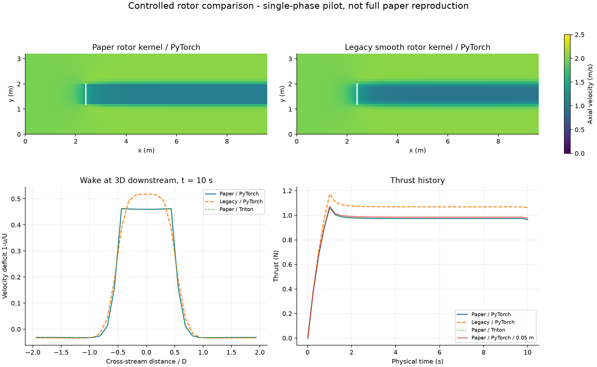
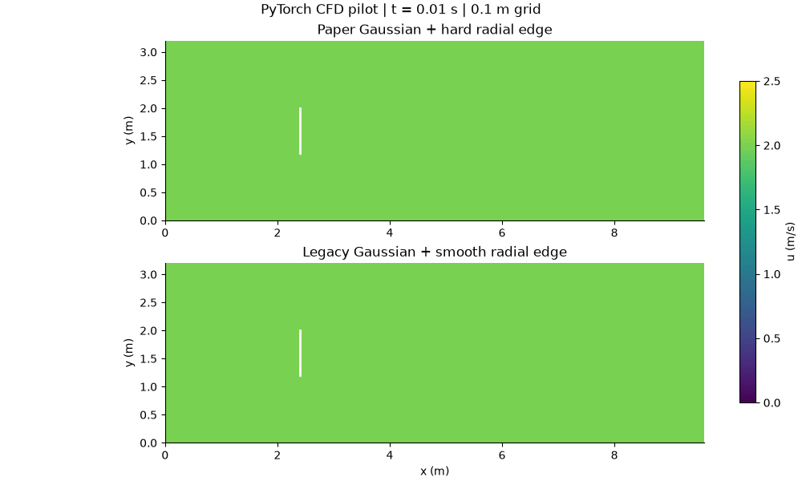
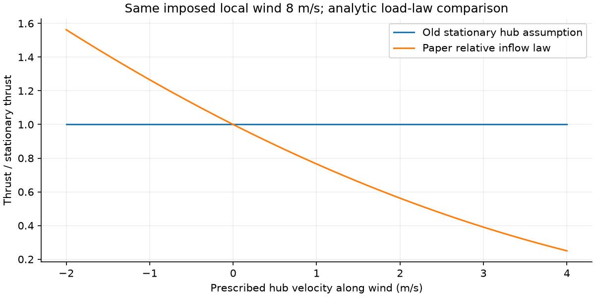

阶段一 · 转子模块移植与数值验证论文转子模型与我们的 MAC 求解器
用固定 Conv3d 算子实现的纯 PyTorch 物理求解器，以及论文的加权致动盘力模型。没有训练权重，不是学习型物理代理模型。
论文：Davidson et al. — Turbines and thrusters (2026)。完整实现说明见 README。
风场与推力对比
相同网格、边界、来流和推力系数：比较论文的高斯轴向分布＋径向硬边界、我们原来的平滑径向边界，以及 PyTorch / Triton 两种算子实现。两种实现的相同模型曲线几乎重合。

| 试验 | 最终盘面速度 | 最终推力 | 时间步数 |
|---|
| 论文核 / PyTorch / 0.1 m | 1.53310 m/s | 0.96484 N | 667 |
| 原平滑核 / PyTorch / 0.1 m | 1.60873 m/s | 1.06238 N | 667 |
| 论文核 / Triton / 0.1 m | 1.53310 m/s | 0.96484 N | 667 |
| 论文核 / PyTorch / 0.05 m | 1.54201 m/s | 0.97608 N | 1334 |
域：9.6 × 3.2 × 3.2 m；风速 2 m/s；转子直径 0.8 m；Ct=0.75；高斯 σ=0.2 m。模拟 10 s，首秒渐增载荷。无地形、无显式湍流模型，底面为滑移边界。细化后盘面速度变化约 0.58%，仅是两级网格敏感性检查，不代表已证明收敛或达到稳态。
尾流形成动画

下载 GIF下载 MP4下载对比图运行参数误差指标GPU 验证报告
浮体移动为什么会改变推力？
论文采样局部风速后减去轮毂速度。下图只比较给定局部风速下的解析载荷关系，不是浮体运动仿真：轮毂顺风运动时，相对风速变小，推力随其平方减小。

当 Ct=0.75 时，论文公式转换得到 Ct′=4/3，与我们原来的静止风机公式相同。新增内容是空间权重、相对轮毂速度以及传给浮体的力和力矩；不是解析叶片旋转。
完整论文复现还缺什么
下一阶段需要匹配附录 B.2 的风洞边界、湍流入口与壁面设置，并以作者 OpenFOAM 算例或可追溯参考数据校核。在此基础上才能拓展到论文的两相流、自由液面、浮体运动和系泊。当前结果不能用于声称优于 OpenFOAM，或预测真实发电功率。
结果来自 RTX 5090 实际运行。固定卷积压力算子禁用 TF32，以保持散度约束的数值精度。